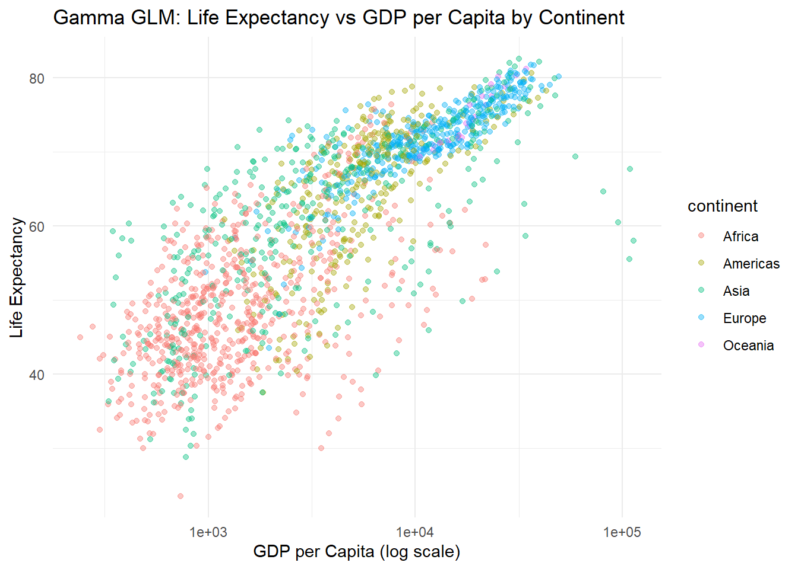

# Load libraries
library(gapminder)Warning: package 'gapminder' was built under R version 4.5.3library(dplyr)
Attaching package: 'dplyr'The following objects are masked from 'package:stats':
filter, lagThe following objects are masked from 'package:base':
intersect, setdiff, setequal, unionlibrary(ggplot2)
head(gapminder)# A tibble: 6 × 6
country continent year lifeExp pop gdpPercap
<fct> <fct> <int> <dbl> <int> <dbl>
1 Afghanistan Asia 1952 28.8 8425333 779.
2 Afghanistan Asia 1957 30.3 9240934 821.
3 Afghanistan Asia 1962 32.0 10267083 853.
4 Afghanistan Asia 1967 34.0 11537966 836.
5 Afghanistan Asia 1972 36.1 13079460 740.
6 Afghanistan Asia 1977 38.4 14880372 786.### How does life expectancy change with gdp
model <- glm(lifeExp ~ gdpPercap * continent,
family = Gamma(link = "log"),
data = gapminder)
summary(model)
Call:
glm(formula = lifeExp ~ gdpPercap * continent, family = Gamma(link = "log"),
data = gapminder)
Coefficients:
Estimate Std. Error t value Pr(>|t|)
(Intercept) 3.824e+00 7.365e-03 519.244 < 2e-16 ***
gdpPercap 2.822e-05 2.059e-06 13.708 < 2e-16 ***
continentAmericas 2.521e-01 1.458e-02 17.296 < 2e-16 ***
continentAsia 2.213e-01 1.116e-02 19.832 < 2e-16 ***
continentEurope 3.582e-01 1.593e-02 22.492 < 2e-16 ***
continentOceania 3.413e-01 9.385e-02 3.637 0.000284 ***
gdpPercap:continentAmericas -1.565e-05 2.442e-06 -6.406 1.93e-10 ***
gdpPercap:continentAsia -2.227e-05 2.124e-06 -10.486 < 2e-16 ***
gdpPercap:continentEurope -2.191e-05 2.216e-06 -9.888 < 2e-16 ***
gdpPercap:continentOceania -2.060e-05 5.191e-06 -3.969 7.52e-05 ***
---
Signif. codes: 0 '***' 0.001 '**' 0.01 '*' 0.05 '.' 0.1 ' ' 1
(Dispersion parameter for Gamma family taken to be 0.02111733)
Null deviance: 87.611 on 1703 degrees of freedom
Residual deviance: 38.406 on 1694 degrees of freedom
AIC: 12238
Number of Fisher Scoring iterations: 6ggplot(gapminder, aes(x = gdpPercap, y = lifeExp, color = continent)) +
geom_point(alpha = 0.4) +
scale_x_log10() +
labs(
title = "Gamma GLM: Life Expectancy vs GDP per Capita by Continent",
x = "GDP per Capita (log scale)",
y = "Life Expectancy"
) +
theme_minimal()